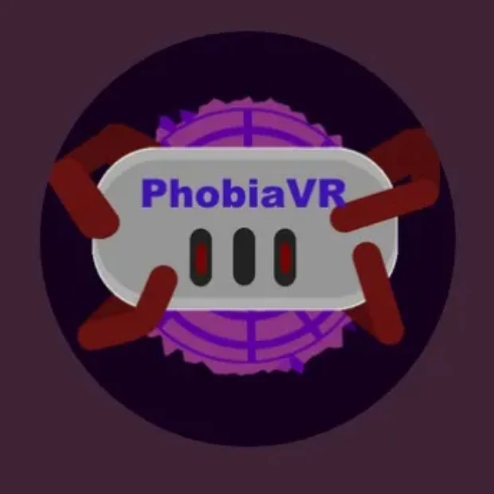

VR horror · Meta Quest · Client project
Waking Nightmare PhobiaVR
Awaken in a dark room and fight off the monsters that await. A horror experience for Meta Quest, made for a real client.

- Role
- Creative director, programmer, client contact
- Team
- Team 28, 5 people; published with Moin Uddin Sami, Xin Hu Dobbie and RePerson
- Client
- LiminalVR, for their experience app
- When
- 2025 · Macquarie University
- Tools
- Unity 2019 · C# · Liminal SDK · Volumetric Light Beam
- Platform
- Meta Quest 2 and 3
- Status
- Prototype handed over to the client
In 30 seconds
- The game
- A short horror experience for Meta Quest, built with a client for LiminalVR's experience app.
- My part
- Set the creative direction and was the team's contact with the client. Built the event pacing, flashlight, monster exposure, lighting and audio systems.
- Evidence
- A Quest APK on itch.io and the software requirements sections I wrote. No headset footage yet.
Systems
Pacing fear in phases.
The experience runs in phases, each made of waves. Events belong to a wave or a phase and fire by priority.
Pacing · EventManager
- Phase
- Wave
- Events scoped to the wave or phase
- Fired by priority
Player tool · Flashlight
- Flashlight beam (VLB)
- Monster exposed
- Monster fades
Room · Environment
- Automated ceiling lights
- Audio on a refactored architecture
Diagram of the systems I built, drawn from their descriptions. It isn't a code architecture diagram.
My contribution
What I built and wrote.
- An EventManager that handles wave- and phase-scoped priority events.
- The flashlight mechanic for Meta Quest, built on the Liminal SDK with the Volumetric Light Beam package.
- A monster fade/exposure system, and automated ceiling lighting.
- A refactor of the project's audio architecture for maintainability.
- Sections of the IEEE 830 software requirements specification: quality management, the schedule (Gantt chart), team organisation and team values.
Direction & client work
Working with a real client.
- Direction
- Set the creative direction for the project as creative director.
- Liaison
- Met and emailed LiminalVR regularly on behalf of the team.
- Handover
- Delivered to the client as an in-progress build for them to finish.
Not yet documented Headset footage, comfort and performance testing notes, and the client's feedback aren't documented here yet.